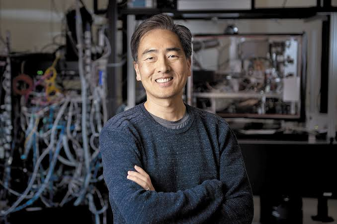
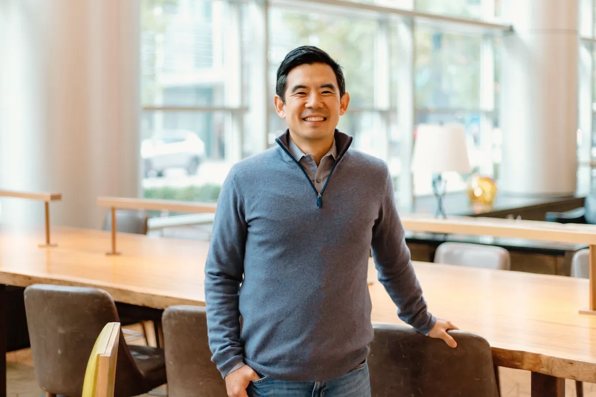
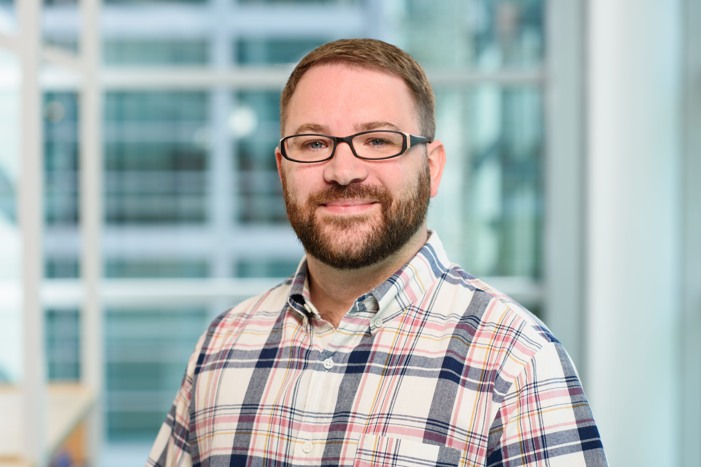
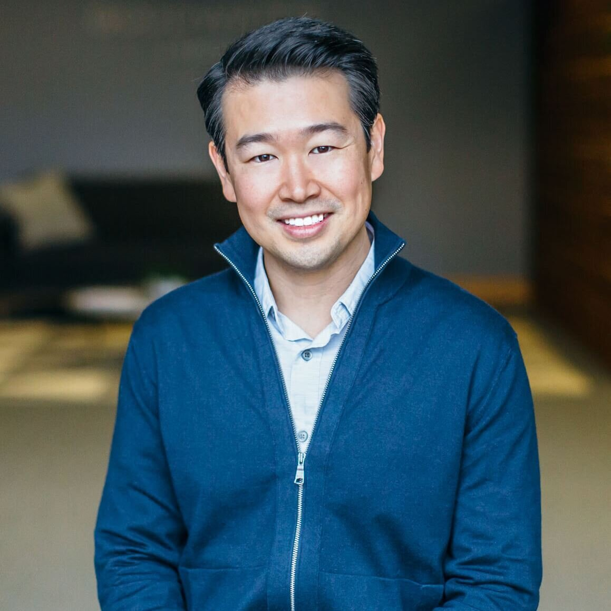

MAR162027
MAR 16 / OPENING NIGHT
OpeningNight
Salesforce Tower에서 시작하는 82 Startup Week의 오프닝 나이트. 새로운 만남으로 한 주를 열어보세요.
17:00–21:00 PDTSalesforce TowerTicket $200
세상을 바꾸는 시작, 그 연결의 한가운데.
창업가와 빌더들의 다음 챕터가 샌프란시스코에서 열립니다.


혼자 품었던 아이디어가 더 큰 가능성이 되는 곳.
82 Startup Week는 새로운 도전을 시작하고, 서로의 경험을 나누고, 다음 기회를 함께 만들어가는 자리입니다.
Salesforce Tower에서 시작하는 82 Startup Week의 오프닝 나이트. 새로운 만남으로 한 주를 열어보세요.
키노트, 창업가 쇼케이스와 네트워킹. 이틀 동안 아이디어와 경험을 나누는 82 Startup Week의 메인 서밋입니다.
한국과 한인 스타트업 60개사의 라이브 데모와 제품을 만나보세요. 창업가, 투자자와 직접 연결되는 이틀간의 엑스포. 무료 입장 · 사전 등록 필수.
창업가와 투자자가 펀드레이징, 성장과 미국 시장 진출의 경험을 나누는 저녁 네트워킹입니다.
커뮤니티와 함께 서밋을 마무리하는 축하의 자리. 대화와 음식, 음악으로 새로운 연결을 이어갑니다.
82 Startup Week를 마무리하는 VIP 애프터 파티. 초청 게스트와 한정 판매 티켓으로 참여하는 네트워킹 저녁입니다.
The people sharing their stories at 82 Startup.

Professor · IONQ

Co-founder · Gusto

Co-founder · Slack

Co-founder · Good Water Capital
2027년 3월, 샌프란시스코에서 만나요.